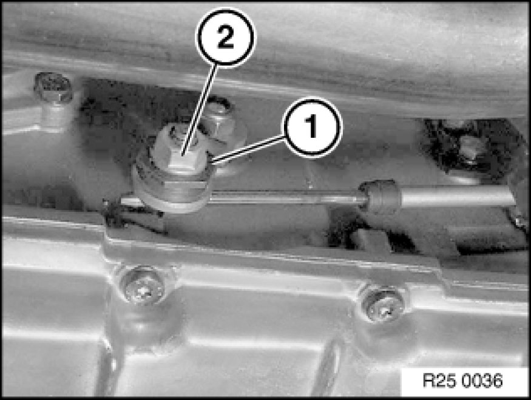
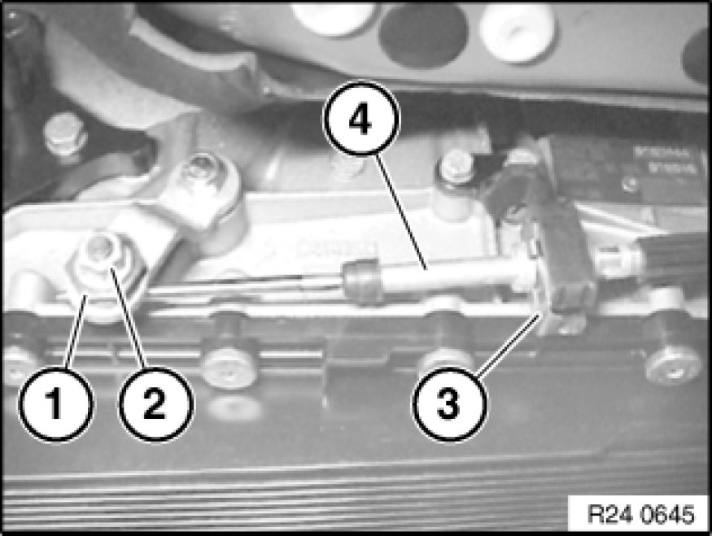
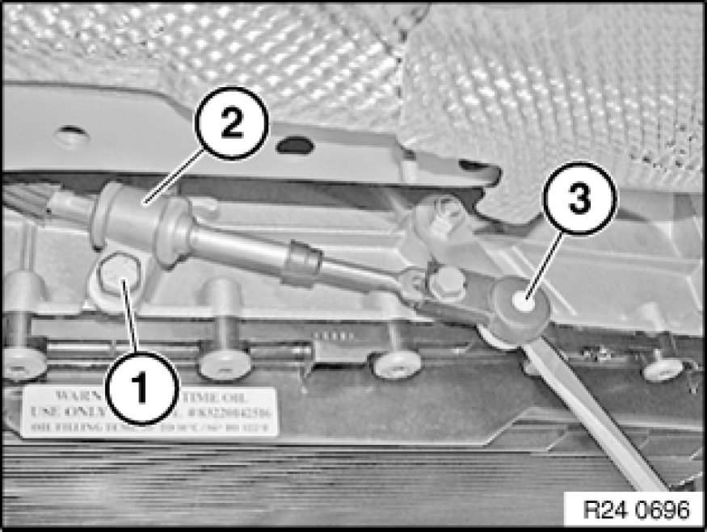
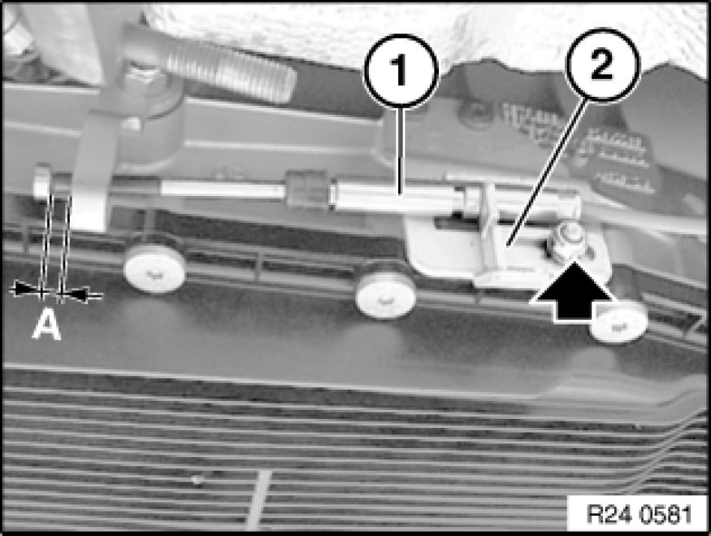
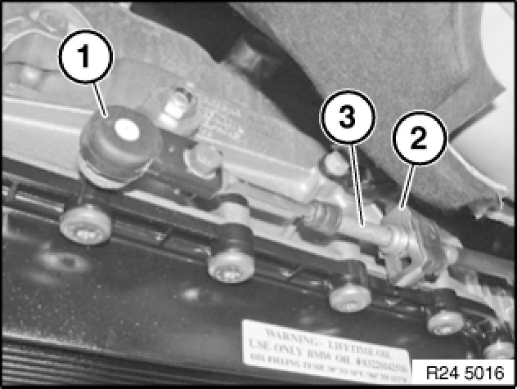
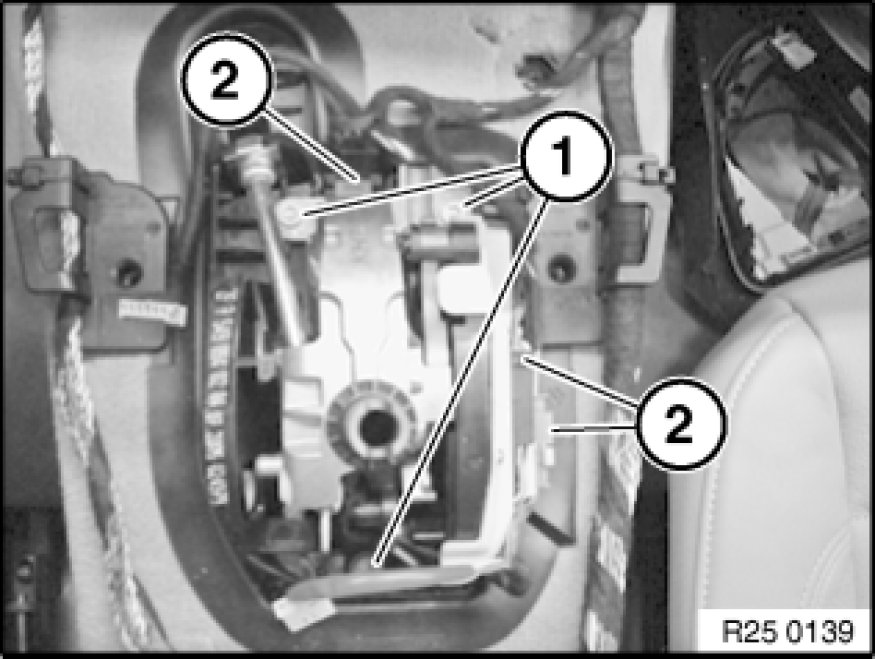

25 16 056 Removing and Installing/Replacing Shift Tower (Steptronic)
25 16 056 - Removing and installing or replacing shift tower (Steptronic)

Necessary preliminary tasks:
- Remove rear underbody protection.
- Remove centre console 51 16 200 Removing and Installing Storage Compartment.

Note:
Version 1:
Move selector lever to parking position "P".
Grip clamping sleeve (1) and slacken nut (2).
Installation Note:
Adjust selector lever 24 00 018 Adjusting Selector Lever (GA6L45R).

Note:
Version 2:
Grip clamping sleeve (1) and slacken nut (2).
Detach retainer (3) downwards using a screwdriver.
Pull cable (4) out of holder.
Installation:
Adjusting shift lever

Note:
Version 3:
Move selector lever to "P" position.
Release screw (1).
Tightening torque 25 16 2AZ. Mechanical Specifications
Remove clamp (2).
Release shift cable head (3) using a screwdriver from ball head of shift cable lever.
Installation:
Adjust selector lever.

Note:
Version 4:
Release nut and disengage cable (1).
Installation:
Unfasten nut.
Adjust cable by means of holder (2) until spacing A = 1 mm is obtained
Tighten nut.

Note:
Version 4:
Move selector lever to "Park".
Release shift cable head (1) using a screwdriver from ball head of shift lever.
Detach retainer (2) downwards using a screwdriver.
Slide cable (3) towards rear and disengaged in downward direction.
Installation:
Adjusting shift lever 24 00 018 Adjusting Shift Lever

Release screws (1).
Tightening torque: 25 16 3AZ Mechanical Specifications.
Disconnect plug connections (2).
Remove cables from holders.
Lift shift tower out of centre console.